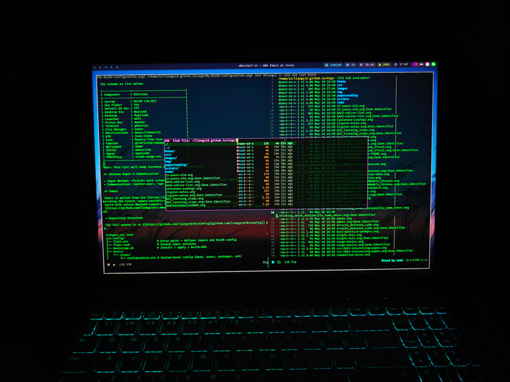
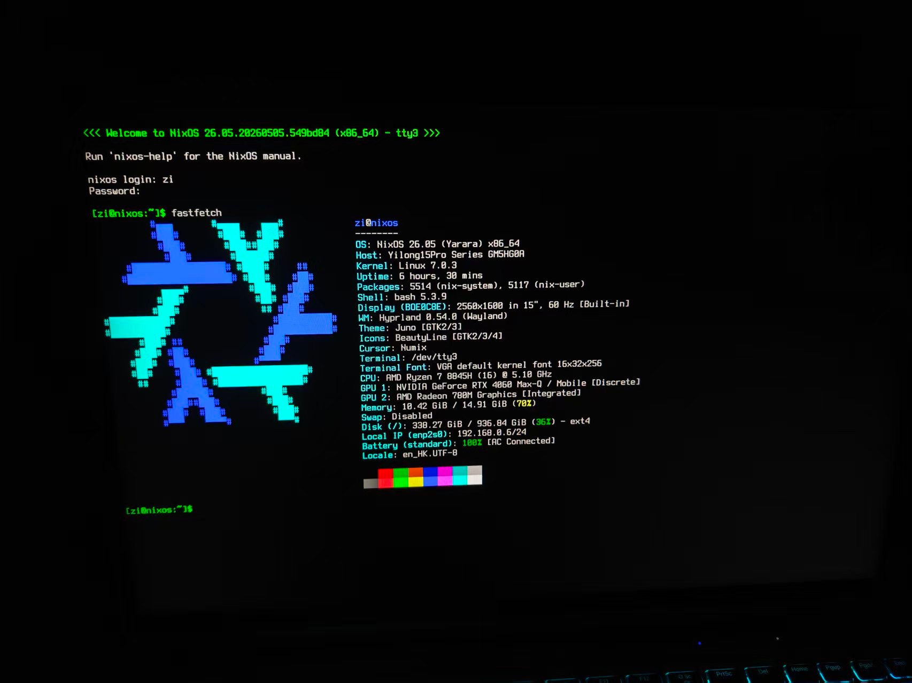
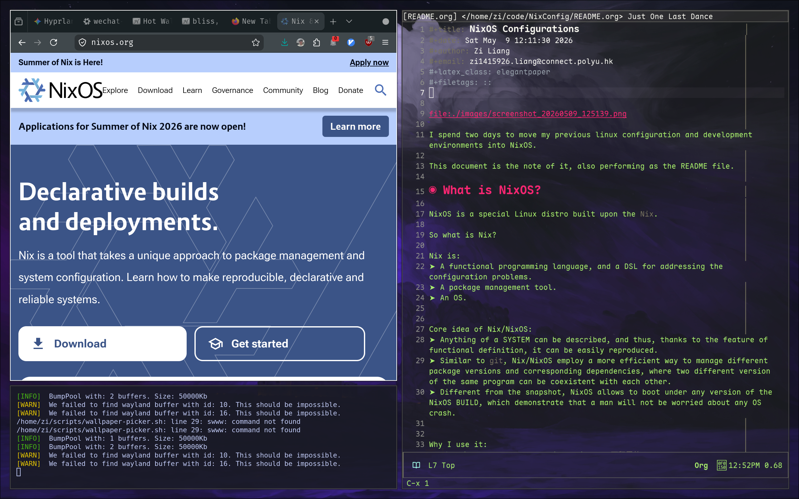
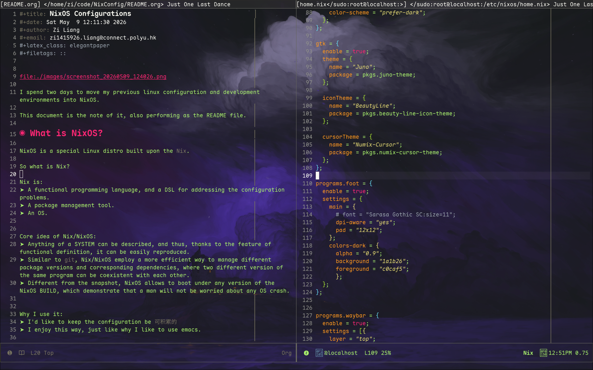
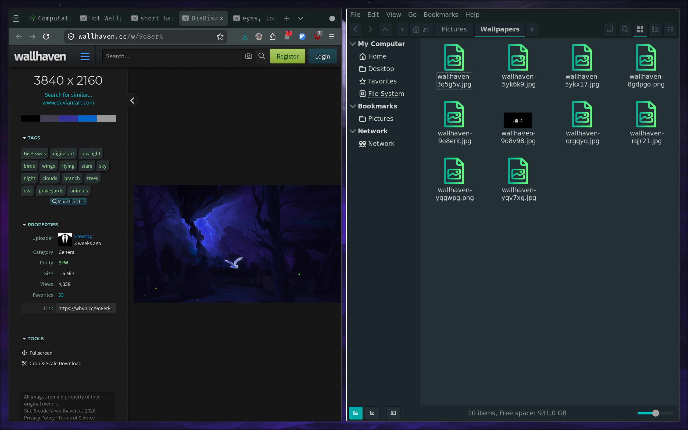
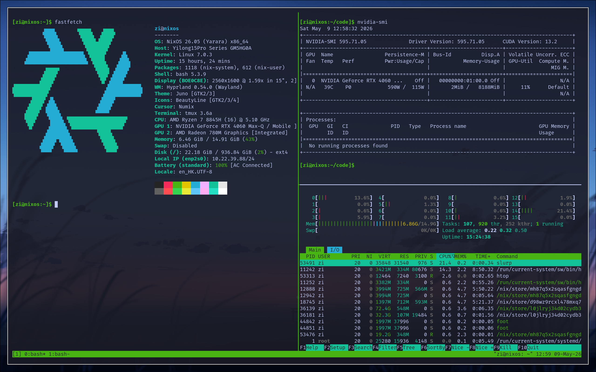
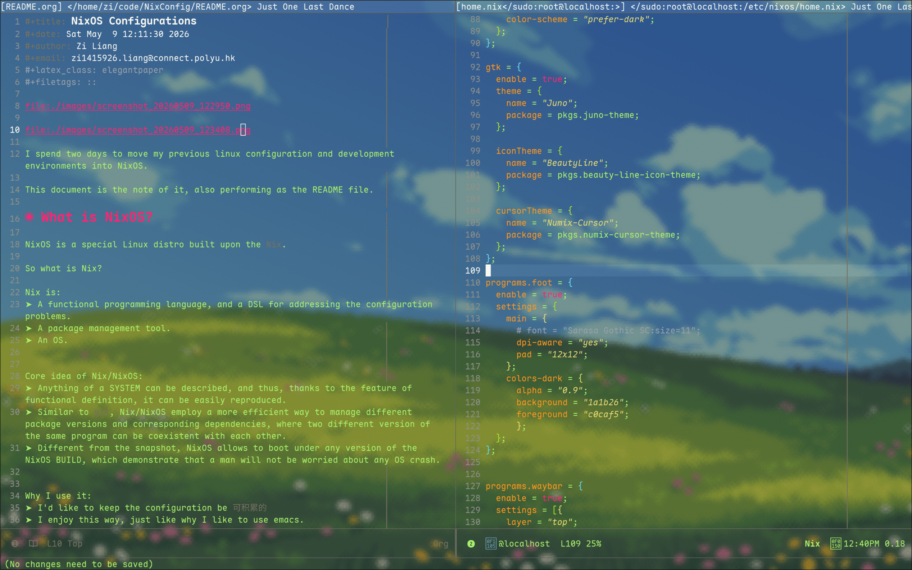
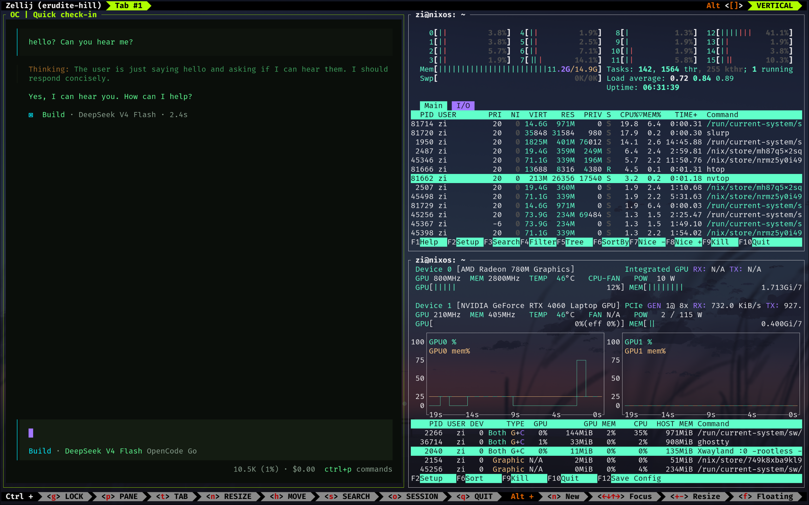

My NixOS Configuration!
A reproducible, modular NixOS desktop configuration featuring Hyprland, Ghostty, Emacs, and a complete development toolchain — all managed via flake and home-manager.








I spent two days to move my previous linux configuration and development environments into NixOS. This document records the setup and serves as a reference for anyone interested in NixOS-based desktop configuration.
1. What is NixOS?
NixOS is a special Linux distro built upon the Nix.
So what is Nix?
Nix is:
- A functional programming language, and a DSL for addressing the configuration problems.
- A package management tool.
- An OS.
Core idea of Nix/NixOS:
- Anything of a SYSTEM can be described, and thus, thanks to the feature of functional definition, it can be easily reproduced.
- Similar to
git, Nix/NixOS employ a more efficient way to manage different package versions and corresponding dependencies, where two different version of the same program can be coexistent with each other. - Different from the snapshot, NixOS allows to boot under any version of the NixOS BUILD, which demonstrate that a man will not be worried about any OS crash.
Why I use it:
- I'd like to keep the configuration be
可积累的 - I enjoy this way, just like why I like to use emacs.
2. What This Configuration Contains?
This configuration contains a minimal configuration of my new desktop environment.
It is a TTY environment by default, BUT providing a very beautiful and robust and convenient DESKTOP development environment.
The schema as list below:
| Component | Solution |
|---|---|
| System | NixOS (26.05) |
| Use Flake? | Yes |
| Default OS Env | TTY |
| Desktop Env | Wayland |
| Desktop | Hyprland |
| Launcher | wofi |
| Status Bar | waybar |
| Terminal | ghostty* |
| File Manager | nemo* |
| Notifications | dunst/libnotify |
| GTK | juno-theme |
| Icon | beauty-line-icon |
| Capture | grim/slurp/swappy |
| Wallpaper | awww |
| Editor | emacs/vim |
| Agent | opencode |
| VPN/Proxy | clash-verge-rev |
Note: This list will keep increase and changed dynamically.
2.1. Chinese Input & Communication
- Input Method:
fcitx5withrimeandpinyin, themeMaterial-Color-deepPurple - Communication:
wechat-uos,qq
2.2. Emacs
Emacs is pulled from the emacs-overlay, providing the latest emacs-unstable-pgtk
build with native Wayland support. The Emacs configuration is auto-cloned from
a.emacs.d via home.activation during first rebuild.
3. Repository Structure
The full source is at github.com/liangzid/NixConfig.
nix-config/ ├── flake.nix # Entry point — defines inputs and NixOS config ├── flake.lock # Pinned input versions ├── bootstrap.sh # Install / apply / build-ISO ├── hosts/ │ └── nixos/ │ ├── configuration.nix # System-level config (boot, users, packages, ssh) │ ├── hardware-configuration.nix │ └── home.nix # User-level config (packages, env, dotfiles, ssh) ├── modules/ │ ├── system/ # Reusable system modules │ │ ├── hyprland.nix # Hyprland WM with xwayland │ │ ├── nvidia.nix # NVIDIA GPU + modesetting │ │ ├── fonts.nix # CJK + nerd fonts │ │ ├── input-method.nix # fcitx5 + rime + cloudpinyin + theme │ │ ├── pipewire.nix # Audio: pipewire + alsa + pulse │ │ ├── portal.nix # XDG desktop portal for Wayland │ │ └── kanata.nix # CapsLock → Control remap │ └── home/ # Reusable home-manager modules │ ├── emacs.nix # Emacs + vterm │ ├── waybar.nix # Status bar with tokyonight theme │ └── gtk.nix # GTK theme + dark mode └── dotfiles/ # Configuration files managed by home-manager ├── hypr/hyprland.conf # Hyprland keybindings + autostart ├── wofi/{config,style.css} ├── ghostty/config # Terminal with Emacs-style keybinds + Aura theme ├── clash/merge-hk.yaml # GFW bypass rules (Hong Kong mode) ├── clash/merge-cn.yaml # GFW bypass rules (Mainland mode) └── fcitx5/{classicui,pinyin}.conf # Input method theming & behaviour
4. Getting Started
4.1. On an Existing NixOS Machine
git clone https://github.com/liangzid/nix-config.git ~/code/NixConfig sudo nixos-rebuild switch --flake ~/code/NixConfig#nixos
4.2. Fresh Install (from NixOS ISO)
# 1. Partition disks and mount to /mnt # 2. Run the installer ./bootstrap.sh install
This will generate a hardware config for the new machine, clone the repo,
and run nixos-install --flake.
4.3. Tip: Quick Rebuild
Use the update alias:
update
Remember to git add any newly created files before rebuilding, as the flake
requires all referenced files to be Git-tracked.
5. Hyprland Keybindings
| Key | Action |
|---|---|
Super + arrows |
Move focus |
Super + Tab |
Cycle windows |
Super + 1-0 |
Switch to workspace 1-10 |
Super + Shift + 1-0 |
Move window to workspace 1-10 |
Super + K |
Kill active window |
Super + V |
Toggle floating |
Super + F |
Toggle fullscreen |
Super + R |
Enter resize mode (arrows / HJKL) |
Super + T |
Open terminal (ghostty) |
Super + X |
Open launcher (wofi) |
Super + E |
Open file manager (nemo) |
Super + L |
Lock screen (swaylock) |
Super + Q |
Quit Hyprland |
Super + Alt + arrows |
Move window |
Ctrl + Alt + T |
Open terminal (alternative) |
Print |
Screenshot region → annotate |
Ctrl + Print |
Fullscreen screenshot → clipboard |
6. Ghostty Keybindings
Ghostty is the primary terminal emulator, configured with Emacs-style keybinding conventions.
| Key | Action |
|---|---|
C-x 2 |
Split horizontally (down) |
C-x 3 |
Split vertically (right) |
C-x 1 |
Zoom (maximize) current split |
C-x 0 |
Close current split |
C-x o |
Next split (other-window) |
C-x k |
Close current split |
C-x b |
Tab overview |
Alt + 1-9 |
Jump to tab 1-9 |
Ctrl+Shift+T / C-t |
New tab |
Ctrl+Shift+W |
Close surface |
Ctrl+Shift+Enter |
New split (auto direction) |
Ctrl+Shift+, |
Reload config |
Ghostty uses the Aura theme with background-opacity = 0.8 and
term = xterm-256color for full compatibility when SSH-ing to remote servers.
7. Laboratory Server Access
All SSH servers are defined in the home.nix configuration. Each server has two aliases:
gsXX/csX— direct connectiongsXXo/csXo— via bastion (jump host:is1.astaple.com)
ssh gs14 # direct ssh gs14o # via jump host ssh cs1 # direct ssh cs2o # via jump host
SSH keepalive (ServerAliveInterval 60) prevents idle disconnection,
and AddKeysToAgent yes caches key passphrases in memory.
8. GFW Bypass (Clash Verge Rev)
clash-verge-rev is installed for proxy management. Two merge configs are provided for switching between regions:
merge-hk.yaml: most traffic → DIRECT, only AI services (ChatGPT, OpenAI, Anthropic) → Proxymerge-cn.yaml: subscription handles default routing, with additional rules for lab servers and AI services
To switch: Profiles → subscription → Edit Info → Merge → point to the desired yaml.
9. Input Method
Fcitx5 is configured with:
- Chinese addons (pinyin + cloud pinyin)
- Rime support
- Theme:
Material-Color-deepPurple - Shuangpin: Ziranma profile
- Complete pinyin.conf managed by home-manager
10. Keyboard Remap
CapsLock is remapped to Control via kanata.
11. System Aliases
| Alias | Command |
|---|---|
enw |
emacs -nw |
ec |
emacsclient |
update |
sudo nixos-rebuild switch --flake ~/code/NixConfig#nixos |
latexmain |
latexmk --pdflatex main.tex |
gui |
start-hyprland |
12. Notes
12.1. Super+L and logind
Systemd-logind intercepts Super+L by default. This config adds
services.logind.settings to ignore those hardware keys and let Hyprland
handle them.
12.2. Swaylock PAM
Swaylock is configured as a PAM service (security.pam.services.swaylock)
so it can unlock the screen without requiring a password policy override.
12.3. Steam
Steam is enabled at the system level: programs.steam.enable = true.
This automatically installs all required 32-bit libraries and the Steam
package itself.
12.4. Ghostty Terminfo
Ghostty's terminfo is made available via
environment.sessionVariables.TERMINFO_DIRS. Additionally, term = xterm-256color
in the Ghostty config ensures full compatibility when SSH-ing to remote
servers that lack the Ghostty terminfo entry.
12.5. Unfree Packages
nixpkgs.config.allowUnfreePredicate whitelists only the unfree packages
actually in use (NVIDIA drivers, Steam, Discord, VS Code, WeChat, QQ, etc.).
12.6. Git Requirement
The flake requires all referenced files to be tracked by Git. Before rebuilding, run:
git -C ~/code/NixConfig add -A